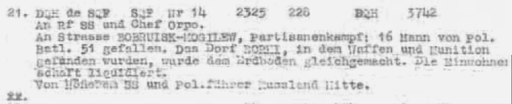

At a glanceExisting decipherment · key not recovered
- The message
- The Higher SS and Police Leader Russia Centre (Mogilev, callsign SQF) to the Reichsführer SS and the Chief of the Order Police, Nr. 14, handed in at 2325 on 16 June 1942; Beaumanor serial A115.
- Where
- NARA, RG 457, Historic Cryptographic Collection, Boxes 202 and 1386, as published by Frode Weierud (CryptoCellar, 2020) and by Robert J. Hanyok, Eavesdropping on Hell (NSA, 2005).
- The cipher
- The double-box cipher: two 5×5 boxes, each letter pair enciphered twice through the same boxes, in the daily key of 16 June 1942 (discriminator ARTTN). 223 cipher letters.
- Where the text comes from
- Bletchley decrypted it at the time; Hanyok reproduces the typed decrypt. A key-free alignment of that text to the ciphertext, tried here, found no fit.
- What it says
- Sixteen men of Police Battalion 51 killed on the Bobruisk–Mogilev road; the village of Borki “dem Erdboden gleichgemacht” and its inhabitants liquidated.
- Still open
- A letter-by-letter check of the decrypt against the cipher, and the key, which need the exact enciphered wording.
- Credit
- Bletchley Park’s decrypt; Frode Weierud’s transcription of the intercepts; Ilya, a reader, located Borki.
This page was split on 14 October 2026 from the page on the police radiograms of 1942. The five messages of 27 February 1942 are in another daily key, a different cipher with its own page: German police double-box radiograms of 27 February 1942, which also describes the system and the failed ciphertext-only attacks.
01 The message
A115 is Nr. 14 from Mogilev, callsign SQF, the station at the headquarters of the Higher SS and Police Leader Russia Centre, handed in at 2325 on 16 June 1942 by its preamble and taken down at Beaumanor on 3742 kHz; stations 51 and 43 both copied it. Weierud’s paper, German Police Doppelkastenschlüssel Messages, transcribes it with the Red Forms of both stations. The first five-letter group, ARTTN, is the discriminator, which names the key and is not part of the text. The day’s key is not the key of the 27 February messages.

The cipher is the Army’s double box as the police used it from November 1941: two 5×5 boxes, the plaintext written in double lines (17 letters in the manuals, 21 in the Army’s NI variant), and each pair enciphered twice through the same boxes. The system, the manuals and the reference implementation are described on the 27 February page.
02 Bletchley’s decrypt
Hanyok’s Eavesdropping on Hell (NSA, 2005) follows this one message from intercept to decrypt, and reproduces Bletchley’s decrypt as entry 21 of that day’s German police decrypts:

An Rf SS und Chef Orpo. An Strasse BOBRUISK–MOGILEW, Partisanenkampf: 16 Mann von Pol. Batl. 51 gefallen. Das Dorf BORKI, in dem Waffen und Munition gefunden wurden, wurde dem Erdboden gleichgemacht. Die Einwohnerschaft liquidiert. Von Höheren SS und Pol.führer Russland Mitte.
To the Reichsführer SS and the Chief of the Order Police: in a fight with partisans on the Bobruisk–Mogilev road, sixteen men of Police Battalion 51 were killed; the village of Borki, where weapons and ammunition had been found, was levelled; the inhabitants were liquidated. From the Higher SS and Police Leader Russia Centre.
Hanyok notes that several villages named Borki exist in present-day Belarus and does not locate this one, but the place is well known: it is Borki in the Kirovsk district of Mogilev region, destroyed on 15 June 1942 together with the settlements around it (Zakrinichye, Krasny Pakhar, Dzerzhinsky, Proletary, Dolgoe Pole, Khvatovka). The operation was carried out by the Dirlewanger SS special battalion with Einsatzkommando 8 and police units after partisan attacks on the Mogilev–Bobruisk road; Dirlewanger’s own report counts 2,027 dead, and a memorial now stands on the site. Zhukov’s history of the Dirlewanger unit cites the same sixteen dead of Police Battalion 51 as the decrypt, so the message of 16 June is the Higher SS and Police Leader’s report of the Borki massacre. (Identification by Ilya, a reader, September 2026: Zhukov, Mogilev regional executive committee, partizany.by.) Because of this decrypt, Schmeh’s 2021 list of Second World War ciphers marks the group of messages “partially solved”.
03 An odd count
The message is 228 letters in both intercepts and in the German preamble. Without the discriminator that leaves 223, but the cipher works on pairs and every enciphered text has an even length. The German clerk therefore added or dropped a letter, or a letter was lost in transmission. Where it went can be measured. A double-box cipher is deterministic on pairs, so a repeated plaintext pair in the same position of the layout gives a repeated cipher pair, and the pairs only show their repeats when they are counted from the right starting point. Counted from the end, A115 has 25 repeated digraphs of 19 types. Counted from the start it has 8, which is chance level. So the stray letter lies among the first nine or so, and the rest of the text pairs up normally.
04 Matching the decrypt to the cipher
A known-plaintext solver built for the February messages (kpsolve.cs) recovers the two boxes from about 80 plaintext–ciphertext pairs on synthetic controls (111 of 111 pairs consistent from random starts, 68 of 80 at 80 pairs). The decrypt of A115 should supply more than that, if the enciphered words can be placed under the cipher letters. Two aligners (align115c.py, align115h.py) tried to place them without any key: repeated cipher pairs must fall on repeated plaintext pairs, and the search backtracks exactly over spellings, X separators, numbers written out, address and signature placement, Borki / Mohilew / Bobruiisk variants, 222 or 224 letters, and line lengths 1–24.
No combination gives a consistent alignment. The same search recovers a synthetic text spelled in one of the ways it tries in 35 seconds, and A115’s repeated cipher pairs are real (section 03). So either the words enciphered differ from Bletchley’s typed text, through abbreviation, order or extra matter such as a longer address, or the police layout differs from both manuals. The reading of the message therefore rests on the decrypt alone; it is not confirmed letter by letter here, and the key of 16 June was not recovered.
05 What remains open
- The letter-by-letter check and the key. They need the exact German wording that was enciphered, or about 80 pairs from another message of the same day. No other message of 16 June 1942 is in Weierud’s set.
- What an alignment would add. It would settle the police layout (lines of 17 or 21, left or right neighbour for same-row pairs) and show whether police boxes were random or built from a keyword; keyword-built boxes would open a keyword search on the 27 February key.
06 Sources
- Frode Weierud, German Police Doppelkastenschlüssel Messages, Crypto Cellar Research, 5 August 2020, from NARA, RG 457, HCC, Box 1386 (NR. 4417) and Box 202 (NR. 976), with the teleprinter copies and the Red Forms of stations 51 and 43.
- Robert J. Hanyok, Eavesdropping on Hell: Historical Guide to Western Communications Intelligence and the Holocaust, 1939–1945 (NSA Center for Cryptologic History, 2005): the A115 intercept, Red Form and decrypt, and the police change to double Playfair in autumn 1941.
- Klaus Schmeh, “Can you solve these double-box messages from WW2?”, Cipherbrain, 30 August 2020.
- On Borki: Zhukov, Okhotniki za partizanami. Brigada Dirlevangera; the Mogilev regional executive committee; partizany.by.
The A115 ciphertext (a115.txt), the aligners and the decrypt image are in the repository folder targets/orpo1942jun/; the shared tools (dk.py, kpsolve.cs, msgs.txt) are in targets/orpo1942/.